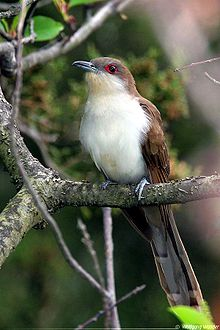
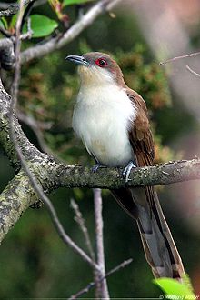

| Black-billed Cuckoo | |
|---|---|
|  | |
| Conservation status | |
| Binomial name | |
| Coccyzus erythropthalmus (Wilson, 1811) |
|
| Synonyms | |
|
Coccyzus erythrophthalmus |
| Black-billed Cuckoo | |
|---|---|
|  | |
| Conservation status | |
| Binomial name | |
| Coccyzus erythropthalmus (Wilson, 1811) |
|
| Synonyms | |
|
Coccyzus erythrophthalmus |
The Black-billed Cuckoo, Coccyzus erythropthalmus, is a cuckoo.
Adults have a long brown tail and a black bill. The head and upper parts are brown and the underparts are white. There is a red ring around the eye. Juveniles are drabber, and the eye ring is greenish.
Their breeding habitat is edges of wooded areas across North America east of the Rockies. They nest in a low tree or shrub, sometimes on the ground. They sometimes lay eggs in the nests of other birds.
They migrate to South America. This species is a very rare vagrant to western Europe.
These birds forage in shrubs or trees. They mainly eat insects, especially tent caterpillars, but also some snails, eggs of other birds and berries.
The call is a rapid repetitive Coocoocoo.

{kind=link}
{kind=link}